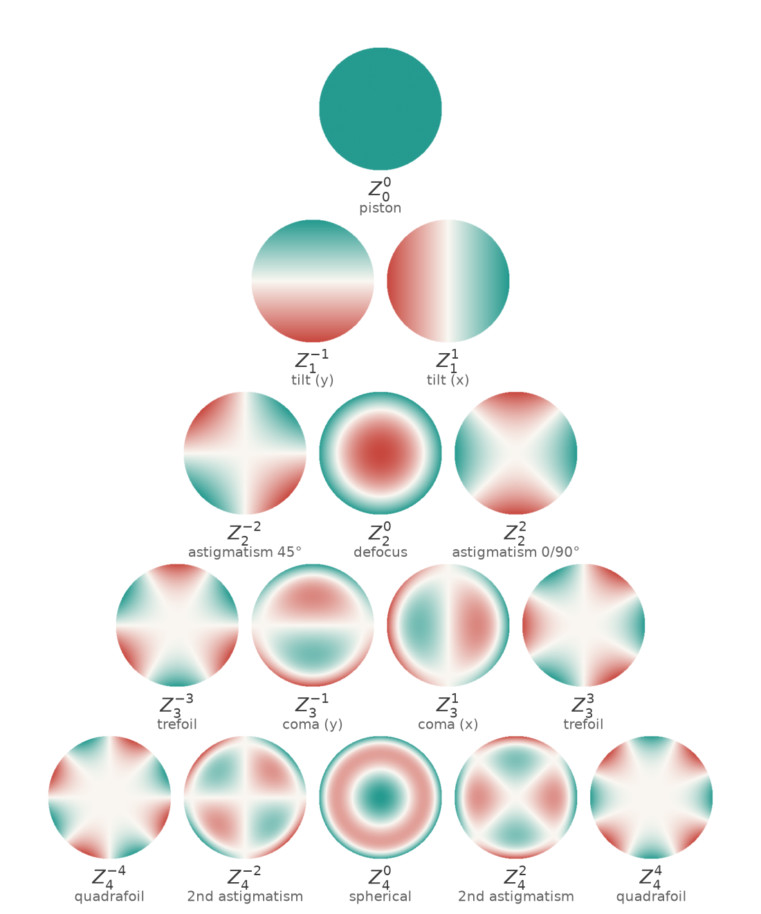

Zernike Polynomials
Measure the wavefront coming out of a lens, a telescope or an eye and you get a map: one number for every point in the pupil. To do anything useful with it, compare two units, drive a deformable mirror, write a tolerance, or simply say what is wrong, that map has to become a short list of numbers. Zernike polynomials are the standard way to make the list, and have been since Fritz Zernike introduced them in the 1930s: a set of shapes on a circular pupil that are mutually orthogonal, ordered so that the first handful are the aberrations everyone already has names for.
Orthogonality is the whole point. It means each coefficient can be measured without reference to the others, that the RMS wavefront error is the square root of the sum of their squares, and that dropping the high-order terms leaves the low-order ones untouched. This note builds the basis, works through the indexing conventions that cause most of the practical trouble, connects the modes back to the Seidel aberrations they resemble, and ends with the ways the scheme can mislead.
1. The Basis
A Zernike polynomial is a polynomial in the pupil radius multiplied by a sinusoid in the azimuth. Two integers label it: the radial order \(n \ge 0\), which is the highest power of \(\rho\) it contains, and the azimuthal frequency \(m\), which counts the cycles around the pupil and runs from \(-n\) to \(n\) in steps of two, so that \(n - |m|\) is always even. Writing \(\rho \in [0, 1]\) for the pupil radius normalized to the pupil edge and \(\theta\) for the azimuth,
\[Z_n^m(\rho, \theta) = N_n^m\, R_n^{|m|}(\rho) \times \begin{cases} \cos(m\theta), & m \ge 0,\\[2pt] \sin(|m|\theta), & m < 0,\end{cases}\]
where \(N_n^m\) is a normalization constant, chosen below, and the radial part is the polynomial
\[R_n^{|m|}(\rho) = \sum_{k=0}^{(n-|m|)/2} \frac{(-1)^k\,(n-k)!}{k!\left(\frac{n+|m|}{2}-k\right)!\left(\frac{n-|m|}{2}-k\right)!}\;\rho^{\,n-2k}.\]
Three properties are worth more than the formula itself. \(R_n^{|m|}\) contains only the powers \(\rho^n, \rho^{n-2}, \dots, \rho^{|m|}\), so a mode with high azimuthal frequency has no low-order radial content. \(R_n^{|m|}(1) = 1\) for every \(n\) and \(m\), so the modes all reach the same value at the rim before normalization. And the number of modes through radial order \(n\) is \((n+1)(n+2)/2\): six through \(n = 2\), fifteen through \(n = 4\), forty-five through \(n = 8\), which is why wavefront reports so often stop at one of those numbers.

The normalization is the part worth pinning down, because it decides what a coefficient means. The standard choice makes every mode have unit RMS over the pupil,
\[N_n^m = \sqrt{\frac{2(n+1)}{1+\delta_{m0}}},\]
that is \(\sqrt{n+1}\) when \(m = 0\) and \(\sqrt{2(n+1)}\) otherwise, where \(\delta_{m0}\) is 1 for \(m = 0\) and 0 for every other \(m\). With this convention a coefficient is exactly the RMS wavefront error that its mode contributes, in whatever unit the wavefront is measured in, usually waves. Leave the modes unnormalized instead, as some instruments and textbooks do, and the coefficient becomes the peak value at the rim, which is a different number by a factor of \(\sqrt{n+1}\) or \(\sqrt{2(n+1)}\). Section 3 is about not mixing the two up.
2. What Orthogonality Buys
Any two of these modes are orthogonal over the unit disc: average their product over the pupil and the result is zero unless they are the same mode, in which case the normalization above makes it one,
\[\big\langle Z_n^m Z_{n'}^{m'} \big\rangle = \delta_{nn'}\,\delta_{mm'}, \qquad \big\langle f \big\rangle = \frac{1}{\pi}\int_0^{2\pi}\!\!\int_0^1 f(\rho, \theta)\,\rho\,d\rho\,d\theta,\]
where \(\langle f\rangle\) denotes the average of \(f\) over the unit disc and \(\delta\) is 1 when its two subscripts match and 0 otherwise. Expand a measured wavefront in the basis,
\[W(\rho, \theta) = \sum_{n, m} a_n^m\, Z_n^m(\rho, \theta),\]
with coefficients \(a_n^m\) in the same units as \(W\), and three practical things follow.
- Every coefficient is an independent projection, \(a_n^m = \langle W Z_n^m\rangle\), computed without knowing or caring about any other mode. Least-squares fitting over a circular pupil sampled evenly gives the same answer, which is what an interferometer or a Shack-Hartmann sensor actually does.
- Errors add in quadrature. The RMS wavefront error is \(\sigma = \sqrt{\sum (a_n^m)^2}\) over every mode except piston, and usually except tip and tilt as well, since those only move the image rather than blur it. That single number is what feeds the Strehl estimate and the diffraction-limited criterion.
- Truncation is safe. Fit fifteen modes or forty-five and the first fifteen come out the same; the error left behind is the root-sum-square of the coefficients that were dropped.
None of this holds for the Seidel terms, which overlap: \(\rho^4\) contains \(\rho^2\), so “how much spherical aberration” a wavefront has depends on where the focus is. That is not a defect of Seidel's list, which was built to describe how a system fails rather than to fit data, but it is the reason measurement work is done in the Zernike basis. Section 4 makes the relationship between the two exact.
One caution about the fitting, since it is where the orthogonality is most often quietly lost: the integrals above assume the whole circular pupil, weighted evenly. Real data comes on a grid of samples, sometimes with a central obscuration or dead subapertures, and in that case the modes are no longer orthogonal over the sampled region. The fit still works as least squares, but the coefficients are correlated: change the number of modes and the earlier ones move. Section 6 returns to this.
3. The Indexing Mess
Two integers are awkward in code and in spreadsheets, so the modes are usually flattened into a single index \(j\). There are two common ways to do it and they disagree.
Noll's ordering, introduced in 1976 for atmospheric turbulence and now standard in astronomy and adaptive optics, starts at \(j = 1\) for piston. Within a radial order it takes \(|m|\) in increasing order, and for each nonzero \(|m|\) it puts the cosine mode on even \(j\) and the sine mode on odd \(j\). The OSA/ANSI ordering, standard in ophthalmic optics, starts at \(j = 0\) and has a closed form,
\[j_{\text{OSA}} = \frac{n(n+2) + m}{2},\]
which simply reads each row of the pyramid in figure 1 from left to right, \(m = -n\) up to \(m = +n\).
The two agree on defocus, which is 4 in both, and on horizontal coma, which is 8 in both, and then diverge. Astigmatism is 5 and 6 in Noll but 3 and 5 in OSA. Spherical aberration is 11 in Noll and 12 in OSA. Trefoil is 9 and 10 in Noll but 6 and 9 in OSA. Combine that with the normalized-or-not choice from section 1 and with the sign convention for the sine modes, and a sentence like “the \(Z_{11}\) coefficient is 0.06” carries no information at all. Coefficients should always travel with \((n, m)\), the normalization, and the pupil they were fitted over.
Here are the first fifteen modes in both schemes, with the normalized polynomial and the name each usually goes by:
| \(n\) | \(m\) | Noll \(j\) | OSA \(j\) | normalized polynomial | name |
|---|---|---|---|---|---|
| 0 | 0 | 1 | 0 | \(1\) | piston |
| 1 | -1 | 3 | 1 | \(2\rho\sin\theta\) | tilt (y) |
| 1 | +1 | 2 | 2 | \(2\rho\cos\theta\) | tilt (x) |
| 2 | -2 | 5 | 3 | \(\sqrt{6}\rho^2\sin 2\theta\) | astigmatism (45°) |
| 2 | 0 | 4 | 4 | \(\sqrt{3}(2\rho^2-1)\) | defocus |
| 2 | +2 | 6 | 5 | \(\sqrt{6}\rho^2\cos 2\theta\) | astigmatism (0/90°) |
| 3 | -3 | 9 | 6 | \(2\sqrt{2}\rho^3\sin 3\theta\) | trefoil |
| 3 | -1 | 7 | 7 | \(2\sqrt{2}(3\rho^3-2\rho)\sin\theta\) | coma (y) |
| 3 | +1 | 8 | 8 | \(2\sqrt{2}(3\rho^3-2\rho)\cos\theta\) | coma (x) |
| 3 | +3 | 10 | 9 | \(2\sqrt{2}\rho^3\cos 3\theta\) | trefoil |
| 4 | -4 | 15 | 10 | \(\sqrt{10}\rho^4\sin 4\theta\) | quadrafoil |
| 4 | -2 | 13 | 11 | \(\sqrt{10}(4\rho^4-3\rho^2)\sin 2\theta\) | secondary astigmatism |
| 4 | 0 | 11 | 12 | \(\sqrt{5}(6\rho^4-6\rho^2+1)\) | spherical |
| 4 | +2 | 12 | 13 | \(\sqrt{10}(4\rho^4-3\rho^2)\cos 2\theta\) | secondary astigmatism |
| 4 | +4 | 14 | 14 | \(\sqrt{10}\rho^4\cos 4\theta\) | quadrafoil |
Two details in the table are worth a second look. The radial polynomial for \(|m| = n\) is just \(\rho^n\), which is why the outer edges of the pyramid are the pure clover shapes: trefoil, quadrafoil, and so on. And the modes with \(m = 0\) carry the \(\sqrt{n+1}\) normalization rather than \(\sqrt{2(n+1)}\), because they have no sine partner to share the pupil with.
4. Zernike Modes Are Balanced Seidel Terms
The names carried over from the Seidel list are suggestive but not equalities. Project the Seidel spherical term onto the basis and it splits into exactly three modes:
\[\rho^4 = \tfrac{1}{3}\,Z_0^0 + \tfrac{1}{2\sqrt{3}}\,Z_2^0 + \tfrac{1}{6\sqrt{5}}\,Z_4^0,\]
that is, piston plus defocus plus the mode everyone calls spherical aberration. The same happens to the other two aberrations that can be partly focused away:
\[\rho^3\cos\theta = \tfrac{1}{3}\,Z_1^1 + \tfrac{1}{6\sqrt{2}}\,Z_3^1, \qquad \rho^2\cos^2\theta = \tfrac{1}{4}\,Z_0^0 + \tfrac{1}{4\sqrt{3}}\,Z_2^0 + \tfrac{1}{2\sqrt{6}}\,Z_2^2.\]
Read the other way, \(Z_4^0 \propto 6\rho^4 - 6\rho^2 + 1\) is the Seidel \(\rho^4\) with exactly the defocus and piston that minimize its RMS already subtracted. The Zernike modes are the Seidel terms after balancing, which is why their coefficients are smaller and why they are the honest way to report a wavefront: they charge an aberration only for what refocusing cannot remove.
The coefficients above are exactly the balanced RMS values from the Seidel note, since a normalized Zernike has unit RMS:
| Seidel term | becomes | plus | RMS before | RMS after |
|---|---|---|---|---|
| \(\rho^4\) | \(Z_4^0\) spherical | defocus, piston | 0.298 | 0.075 |
| \(\rho^3\cos\theta\) | \(Z_3^1\) coma | tilt | 0.354 | 0.118 |
| \(\rho^2\cos^2\theta\) | \(Z_2^2\) astigmatism | defocus, piston | 0.250 | 0.204 |
The distinction matters whenever numbers cross a boundary. A design program reporting Seidel sums and an interferometer reporting Zernike coefficients are describing the same lens with numbers that differ by a factor of four for spherical aberration, and converting between them means adding back or removing the balancing terms, not renaming a column. The safe habit is to state which is which, and for measurements to prefer the Zernike form, since it is the one whose coefficients survive a change of focus.
5. A Worked Example
Take a lens whose wavefront at the corner of the field, at 550 nm, carries one wave of Seidel spherical aberration, half a wave of coma and four tenths of a wave of astigmatism:
\[W(\rho, \theta) = 1.0\,\rho^4 + 0.5\,\rho^3\cos\theta + 0.4\,\rho^2\cos^2\theta \quad \text{waves}.\]
Projecting it onto the basis with the decompositions of section 4 gives six nonzero coefficients. Tilt and defocus appear even though nobody put them there: they are the balancing parts that the Seidel terms brought with them.
| mode | OSA \(j\) | coefficient (waves) | share of \(\sigma^2\) after refocus |
|---|---|---|---|
| \(Z_1^1\) tilt | 2 | 0.167 | removed by recentering |
| \(Z_2^0\) defocus | 4 | 0.346 | removed by refocusing |
| \(Z_2^2\) astigmatism | 5 | 0.082 | 43% |
| \(Z_3^1\) coma | 8 | 0.059 | 22% |
| \(Z_4^0\) spherical | 12 | 0.075 | 35% |
The RMS error as delivered, counting everything but piston, is 0.404 waves. Drop tilt and defocus, which cost only a shift of the image and a turn of the focus ring, and it falls to 0.125 waves. That single step removes more than two thirds of the error, which is the practical reason wavefront reports always quote the refocused number.
Now look at which aberration dominates what is left. The astigmatism started as the smallest of the three Seidel coefficients, 0.4 waves against 1.0 for spherical, yet it contributes the largest share of the residual error. The reason is section 4: refocusing removes three quarters of the spherical aberration and two thirds of the coma but only a fifth of the astigmatism. Ranking aberrations by their Seidel coefficients gets the priorities wrong; ranking them by balanced RMS gets them right.
Finally, the verdict on the lens. Maréchal's approximation gives a Strehl ratio of about 0.54 at 0.125 waves RMS, so roughly half the light that should be in the core of the image of a point is not. Diffraction-limited performance would need 0.075 waves, so this corner is off by about a factor of 1.7 in RMS. Two notes of caution about that number: the approximation is stretched at 0.125 waves, where it is an estimate rather than a prediction, and the Strehl ratio says nothing about how the missing light is distributed, which is what an MTF curve or a spot diagram is for.
6. Where It Goes Wrong
The basis is so convenient that its assumptions are easy to forget. Four of them bite regularly.
- The pupil has to be a full circle. Orthogonality is an integral over the unit disc, so a central obscuration, a segmented mirror or a rectangular aperture breaks it, and coefficients fitted there are correlated rather than independent. The fix is to orthogonalize over the actual aperture, which for an annulus gives Mahajan's annular Zernikes and in general is a Gram-Schmidt pass over the pupil you really have.
- The coefficients belong to a stated pupil radius. Refit the same wavefront over a smaller pupil and every coefficient changes, and not by a simple factor: rescaling \(\rho\) mixes each mode into the lower modes of the same azimuthal frequency. A number quoted without its pupil diameter is meaningless, which is why ophthalmic prescriptions always name one, typically 6 mm.
- Sampling matters. The orthogonality integrals assume even coverage of the disc; real data has a finite grid, dead subapertures and edge pixels. Least squares still returns a best fit, but the modes are no longer independent, so adding a mode to the fit moves the ones already there. Watch for that whenever a report changes its number of terms.
- The modes are global, and most defects are not. A scratch, a dust shadow or a small thermal blister is a local bump, and a global polynomial basis describes it by spreading energy across dozens of coefficients that individually mean nothing. Fitting more orders to chase such a feature mostly fits noise.
There is also a conceptual trap worth naming. Zernike modes are not the natural modes of anything physical. Atmospheric turbulence has its own statistically optimal basis, the Karhunen-Loève modes, which the low-order Zernikes happen to resemble; a deformable mirror has its influence functions; a lens design has whatever its degrees of freedom actually do. The Zernike basis is a convenient, orthogonal, conventional description of a wavefront on a circle, and it earns its place by being all three, not by being fundamental.
Intuitively: A Graphic Equalizer for Wavefronts
A graphic equalizer splits a sound into bands and gives each one a slider. The bands do not overlap, so moving one changes nothing else; the total power is the sum of the squares of the settings; and a few sliders describe the sound well enough to talk about, even though a full recording holds far more.
Zernike modes are that, for the wavefront on a round pupil. Each mode is a band, each coefficient a slider reading in waves, and the RMS error is the root of the sum of their squares. Refocusing a system is nothing more than resetting the defocus slider, and the reason the spherical-aberration band is drawn as \(6\rho^4 - 6\rho^2 + 1\) rather than \(\rho^4\) is that its band has been cleaned of everything the defocus slider can already do.
The analogy also carries the warning. An equalizer is a poor way to describe a click: a single sharp event spreads across every band at once. A wavefront with a scratch in it is the same, and no number of Zernike terms will describe it as well as simply looking at the map.